307 이진헌
[quantum dot]
A quantum dot is a modern semiconductor device that is a kind of nano particle.
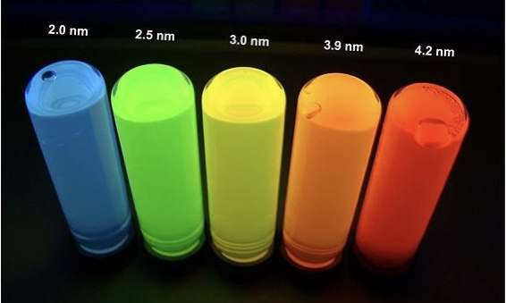
Quantum dots can reduce power consumption.
Quantum dots replace silicon that packs semiconductors.
Quantum dot light emitting diodes are called QLED, and removing LCD devices from QLED can reduce
the thickness of the semiconductor and cause it to bend.
If the wrapping paper is bent, the internal semiconductor should also be bent.
Organic materials that can be bent have many advantages such as lightness, flexibility, and transparency.
The research team made an organic material called C5N and increased electrical conductivity.
However, organic materials are weak in heat, so it is not possible to use them on semiconductors yet.
It's the Fourth Industrial Revolution to build heat-resistant elements.
[If I know the laws of physics, will I be a billiard expert?]
Billiards is a sport in which several balls are placed on a table and the ball is played using a cue, a long stick.
However, many laws of physics apply to billiards.
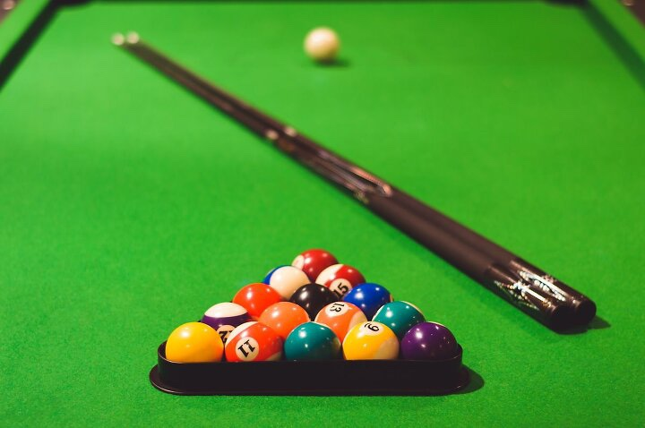
Billiards ball and action-reaction: A phenomenon in which two objects have the same magnitude of the
force acting on each other and the opposite direction.
Ex) When a rolling ball hits a stopped ball, the rolling ball stops and the stopped ball rolls
Billiard ball and momentum: The sum of each amount of exercise is kept constant before and after a collision
Ex) If you hit the ball using the cue, the momentum exchange occurs between the two objects,
and the total is the same.
Billiards ball and elastic force: the force to return to its original state inside an object when it is deformed
Ex) The energy accumulated between the cue and the ball is converted into elastic energy,
which causes the ball to bounce vigorously
As a result, if you study the laws of physics, you will be able to play billiards more efficiently.
307 김소민
Antiphlogisnc enzyme preparation has an effect of dissolving protein and soothing inflammation through enzyme action.
If we are infected with bacteria, white blood cells make cadavers of bacteria or white blood cells (=pus) and this part of body swells.
When we eat this medicine, it can eliminate protein residue and reduce swelling.
There are bromelain, bromelain and trypsin complex, SKSD complex as a kind of anti phlogisnc enzyme preparation.
Bromelain alleviates edema by resorbing body fluid to the circulating system.
Trypsin is a protein discomposing enzyme, and takes away coated tongues of injury.
SK creates plasm and decomposes fibrin.
SD melts nucleoprotein of dead cells.
If you take this medicine, acnes of skin vanish through above mechanism.
Let's make spotless skin by taking a dose together.

Antiphlogisnc enzyme preparation has an effect of dissolving protein and soothing inflammation through
enzyme action. If we are infected with bacteria, white blood cells make cadavers of bacteria or white blood
cells (=pus) and this part of body swells. When we eat this medicine, it can eliminate protein residue and
reduce swelling. There are bromelain, bromelain and trypsin complex, SKSD complex as a kind of anti phlogisnc enzyme preparation.
Bromelain alleviates edema by resorbing body fluid to the circulating system.
Trypsin is a protein discomposing enzyme, and takes away coated tongues of injury.
SK creates plasm and decomposes fibrin.
SD melts nucleoprotein of dead cells.
If you take this medicine, acnes of skin vanish through above mechanism.
Let's make spotless skin by taking a dose together.
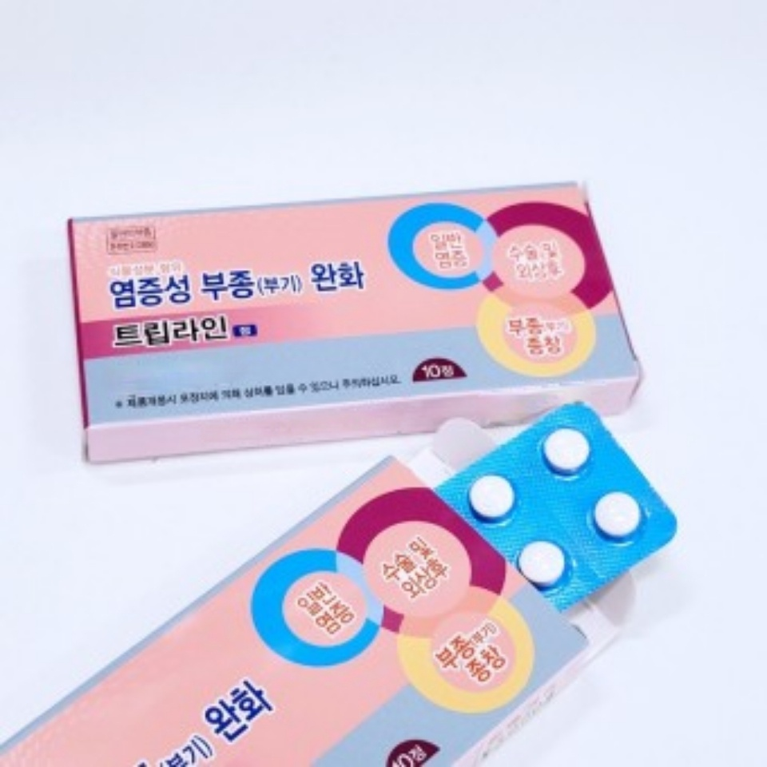
307 최병현
Why did Gandhi in the game of civilization have an aggressive image?
--why?
In Civilization 1, artificial intelligence has the appropriate aggression level for each civilization
This aggression figure appears to be between 0 and 255. Choosing democracy in Civilization 1 adds -2
to the appropriate aggression level for civilization. Gandhi has an aggression level of 1. At this time,
if democracy is selected, overflow occurs, and the aggression level becomes 255, not -1.
--what is the Overflow
Any 8-bit memory (00000000) may represent up to 256 types of information.
This is the same place where aggression figures are stored in the above civilization.
Using this memory to apply the situation above, Gandhi's aggression is expressed as 1 and is expressed as
(0000000 1) in memory. However, the moment democracy is chosen, it changes from memory to (11111111).
Therefore, an unexpected value is stored when a value larger than or smaller than the size is added to
the memory or when a dividend is received.These unexpected situations are called overflows.
--reason
1 bit can only be stored 0 and 1 If 1 to 1 is added, the 1 bit portion becomes 0,
and the upper digit bit is added to 1.)
Some 8-bit memory containing 255 is like this (11111111).
Some memory that 1 puts in larger information becomes (00000000) and stores unintended information in memory,
resulting in an error.
2. what is the binary system(base2)?
The computer calculates and stores based on binary. But what exactly is this binary?
First, you need to know the truth. The true method is a calculation method based on the unit in which
the number of digits increases when counting. Let's take a good example of the truth we use.
We use the decimal system the most in our daily lives. In the decimal system, if a number greater than 9
comes out after writing from 0 to 9, the second digit will have a 1 and the first digit will have a 9 changed to 0.
9 --> 10
+1
--description binary
Binary notation can only be expressed as 0 and 1. If 2 is to be expressed, it is expressed as 10 in binary.
In computers, numbers can only be expressed by electrical signals as "electricity flows" and "no flow,"
so it fits the binary system perfectly, and if there is no electricity, it is expressed as 1 if there is
zero electricity.
hexadecimal--other information
When writing numbers, confusion can arise if you do not know the base number.
So, if you use a base system other than the decimal system, you must indicate the base number after the number.
The notation method is as follows.
ex) 10(2) 10(60)
There is a number written in small parentheses next to the number, which indicates the base number of this number.
30726 김은홍
clean code
Did you know that programmer refine the code like we refine when we write ?
programmer should make clean code !
The bad code in a mess slow down and make fail to meet a deadline.
Today’s topic is ‘How to make a clean code?’.
Here is how to write a clean code :
First, developer clearly express their intention.
Second, make a name that is easy to pronounce and easy to search.
Third, eliminate unnecessary context.
Fourth, use minimal functions.
Fifth, remove duplicate code.
It is important programmer habitually create clean code.
If programmer don’t have the habit of making clean codes, programmer have to practice from now on !
Click : 참고
307 이하은
Hello guys~!
we come back with having topic " the way we prevent from temperature change in future"
Humans are homoiothermic animals which are trying to maintain body temperature 36.5' in any environment.
If body temperature is changed a little, we will have abnormal change in our body .
So, we maintain body temperature through exercising, sweat release etc..
However, there are many environmrents where we can't easily maintain temperature.
Therefore we should prepare and adjust to the situations.
innovative technology, satisfing those factors, is "wearable thermoelement" and "electron skin" based on thermoelement.
Thermoelectric effect is the change from thermal energy to electic energy and the change
from electric energy to thermal energy.
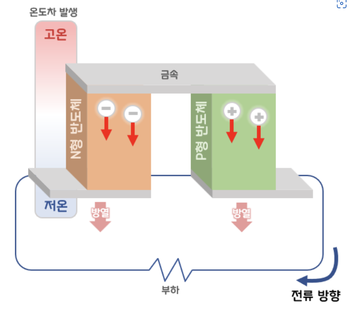
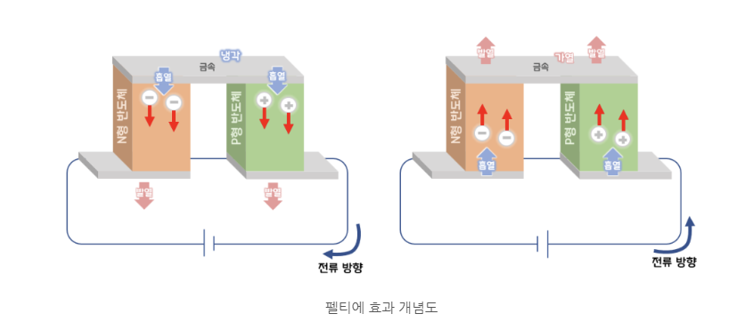
[wearable thermoelement]
Wearable thermoelement is that printing thermoelement materials on special solvent and
glass fabric and making utilized more flexibly than ceramic thermoelement. what is the advantage?
If you apply this to wearable smart machine, you can use the machine for long without charge
because of electric power made by body temperature. For example, soldiers can make electricity energy through
their body temperature, which is used in soldier smart machine and wearable temperature maintainance machine.
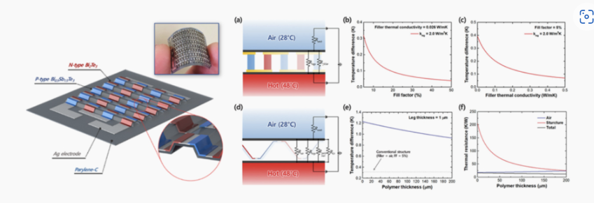
[electron skin]
we can feel ice's coldness and other's warmth in VR
electron skin can be stretched and lessened like real skin form.
So, this is applied to diving suit which should be flexible.
And, through temperature difference between body and deep sea,
it can generate electromotive force, which results to prevent diver's hypothermy.
If we generate temperature difference in anywhere, the place can be electricity power plant.
I expect much more utilization examples in this field from now on because this field has a great potential
for growth through cooperation with electronic, mechanical, medical, new materials...etc engineering
307 김강민
[The days of fretting in the alley are over, the next generation parking system MPS]
Now, the sorrow of beginner who was nervous in an alley will be an old story from now.
Because Hyundai Mobis developed the world's first advanced driver assistance system, MPS.
MPS is a sensor fusion-based technology that integrates data from 12 proximity ultrasonic sensors and 4 image camera sensors required for parking, enabling more precise and secure parking support.
MPS is very good at helping drivers on narrow streets, and when you press a button, it's like a movie where a car drives itself away from obstacles.
One of the key technologies of MPS is narrow-riding.
If the driver is forced to drive on a narrow road due to a narrow road or obstacle, the car uses sensors to calculate the free space information around it and create an avoidance route.
It then helps narraw-riding by adjusting the direction and speed to avoid crash.
Hyundai Mobis' MPS, which includes various functions for safety and convenience, is evaluated as an urban autonomous driving technology specialized in narrow parking environments.
It is also expected to be highly utilized in purpose-based mobility that requires traveling around the city center.
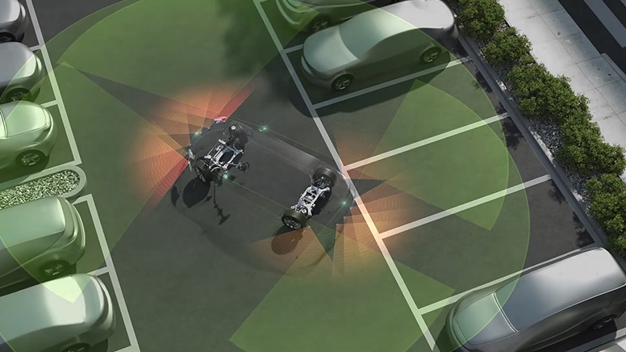
307 안서용
Can`t stop super intelligence AI‘ computer scientist`s warring
results of the study that superintelligence will not be controled came out.
Foreign media(TNW) reported that computer scientist prove making algorithms that can control superintelligent machines
for not threat to human is fundamentally impossible on the 12th.
International computer scientist study team argue based on theoretical calculations algorithms can`t control
super-intelligent AI. This study deal with Nick Bostrom who professor of philosophy at Oxford University says AI control.
Nick Bostrom professor give a warning that if we don`t control AI, we can`t avoid Dystopia.
He give notice superintelligence`s appearance and he says we can enjoy the benefits
when superintelligence appear if we could operate superintelligence safely.
Study team designed theoretical containment that simulate AI`s action for solve this problem.
If action is harmful, stop this program. but study team analyzed constructing algorism
that can control machine is fundamental impossible.
According to research can`t expect about any algorism harm world because fundamental limit of computing.
AI still stay domain of daydream. but study team focus on developing of technology to daydream science writter
writes superintelligence system. According to from any time problem was raised we can`t control superintelligence,
threat to humanity.
307 김정음
Comedonal acne is formed when dead skin cells occur too much and block our pores, especially in summer,
comedonal acne happens because there is lots of sebum and then dead skin cells cover pores.
AHA, a chemical removal ingredient, makes overmany dead skin cells melt so that comedonal acne doesn’t appear
or one which has just showed up can be pressed out.
PHA is the more advanced ingredient in relation to AHA.
PHA reduces skin irritation thanks to the fact that a molecule of PHA is so large that it is absorbed in skin slowly.
If your comedonal ache didn't be improved, even though you used cosmetics blended with PHA, BHA can help you.
BHA fundamentally prevents the induction of an infection and effectively resists acne germs.
BHA that melts and controls sebum enables us to take care of comedonal acne in a long-term.
Cosmetics contains both BHA and PHA, so it controls comedonal acne correcting overmany dead skin cells and managing sebum.
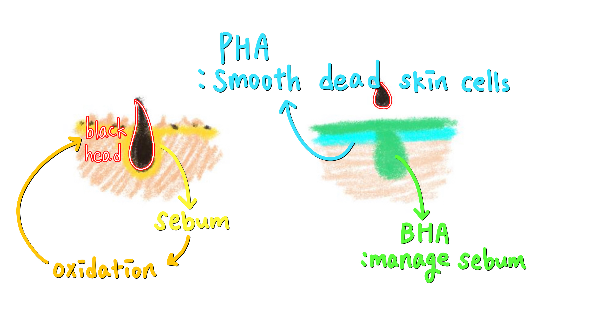
‘Miracle skin cream’, the steroid cosmetic product, is introduced to people who want smooth skins.
Harmonizing with the name of ‘Miracle skin cream’, that steroid cosmetic product gave consumers a ‘miraculous’ shock
What happened when the steroid component that we have to be sensitive at the amount used is
contained in cosmetics closely connected with our life?
The generally known steroid, so-called ‘stress hormone’, is the corticosteroid, which helps our body recover
the toughest part when we are in a physically and emotionally difficult situation.
Also, it is used for a medicine because of its anti-inflammatory and anti-allergic effects.
If we apply the steroid for a long time, folliculitis -a rash looking similar with acne- will come up on the face.
Folliculitis occurs because of the germs or fungal infections in the sebaceous gland or follicle that arises
when the skin immune function decreases by the steroid.
We must halt the use of cosmetics containing the steroid to recover our skin impaired by the long period usage of the steroid.
It is important to keep an eye on a possibility of an exaggerated advertisement because ‘Miracle skin cream’ never exists.
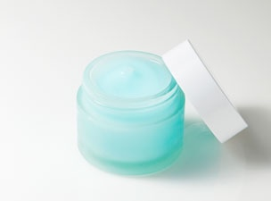
307 조민형 307 김경민
# REAL-ESRGAN:
Training Real-World Blind Super-Resolution with Pure Synthetic Data
- Tencent
Real-Enhanced Super-Resolution Generative Adversarial Network
Real-ESRGAN made in Aug 2021. Real-ESRGAN aims to developing practical image upscaling and video upscaling.
It extends the existing ESRGAN to a practical restoration application, which is trained with pure synthetic data.
This project is developed mainly by Tencent, a Chinese company, and shows an overwhelming difference from other competition models.
This is the result of upscaling the photo on the far left.
There are Bieubie, ESRGAN, DAN, CDC, RealSR, BSRGAN, Real-ESRGAN, and Real-ESRGAN+, among which Real-ESRGAN has the best resolution.
The characteristic of this model is that it is possible to learn synthesized pictures to erase artifacts
from images taken in the real world and improve details.
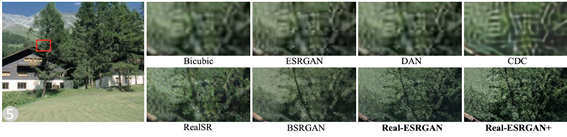
So, what is SRGAN?
SRGAN is abbreviation of Super-Resolution Generative Adversarial Network,
which is based on *GAN, one of the artificial intelligence networks.
(GAN is an abbreviation of Generative Adversarial Network.)
Generative models can make fake data which is similar to real one,
and classification model can’t distinguish between real data and fake data.
In other words, GAN has a structure in which the generative model tries to lower the probability of successful
classification, the classification model tries to increase the probability of successful classification,
and they develops each other competitively.
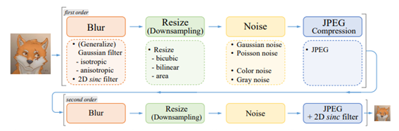
Briefly, it makes original images small and studies process changing the reduced images to a large images.
In this learning process, we can compare reduced images to orignal images,
and it provides us with an inpainting solution vividly.
It is expected to play a great role in upscaling CCTV’s quality and
preserving past memories such as low-quality videos or images through it.
(Left: Original, Right: Upscaled by Real-ESRGAN)
Click : arXiv link
Click : It also has demo for Real-ESRGAN
Click : for anime
Click : demo link
Click : GAN
307 황재연
After covid 19, the use of disposable products and the take-out box is increased.
In a difficult situation to reduce a disposable product, and eco-friendly new material
that has a small weight and a high strength made an entrance. The name is nano-cellulose.
Nano-cellulose said that the f the -micrometer bar shaped particles or fibers.
nano-cellulose is ar that a low density. In other words, it is a bio-based material
that has a large surface area compared to its weight.
The raw material of nano-cellulose can be obtained by mechanical or
chemical treatment of plant saponification walls. Because of this feature,
it is known as the most accessible natural polymer on Earth.
Nano-cellulose can be produced with eco-friendly manufacturing technology.
Specific advantages of this material are low cost, high mechanical strength, hydrophilicity,
high transparency, renewable, biodegradability, biological stability, high thermal stability,
and easy moldability. I hope for the genre no-cellulosenable society.
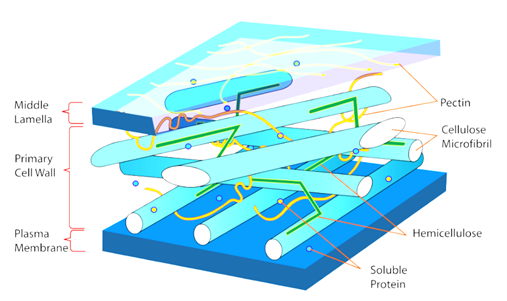
Maxine is an effective material for blocking electromagnetic waves.
A two-dimensional, highly electrically conductive, two-dimensional nano-new material
that can be used as an electromagnetic shielding material, without additional processing or chemical additives
It can be produced in form. When coating electronic devices, without the addition of a conventional metal
shield, It becomes possible to keep devices safe. Nano Korea developed graphene composite materials using
Maxine and developed them into flexible electronic devices and 5G communication mobile devices
Atomic thickness using self-assembly technology as an applicable electromagnetic shielding material technology
Korea's major companies and institutions, such as the production of ultra-thin film Maxine films with
uniformity, have various You can see the application techniques.
Excellent electrical conductivity such as electromagnetic shielding,
flexible printed electronic devices, secondary batteries and storage batteriesVarious applications
such as electrochemical energy storage, gas sensors, or biosensors are available.
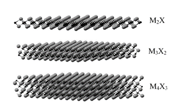
Semiconductor packaging uses a variety of materials. Various types of materials are used,
such as substrates, EMC, Die adhesive, and Goldwire. What are some ways to reduce material costs?
Methods on the substrate include coreless and ETS. First, coreless has no core, so the price decreases and
the overall thickness of the package can be reduced. ETS is also a kind of coreless substrate,
but it can reduce the number of wiring layers by using pre-preg instead of core, which helps to reduce cost.
In Goldwire, there is a way to turn the material into copper and use epoxy to use less gold wire.
Cost reduction is an essential part of helping you become competitive.
Isn't it interesting that using technology in materials can reduce the cost of semiconductors?
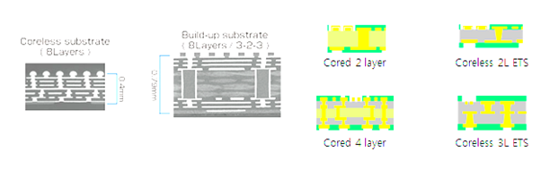